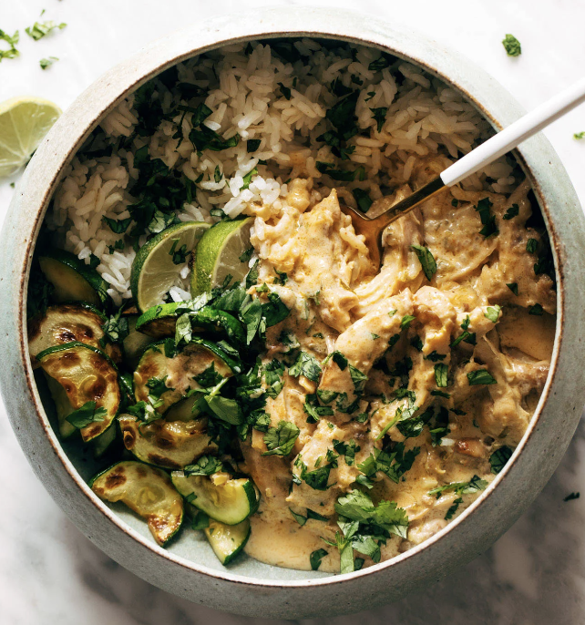

Lemongrass Chicken

Description
Tender chicken thighs sauteed and then simmered in a creamy coconut and lemongrass sauce, on top of a steaming pile of jasmine rice, fresh herbs, and veggies.
Ingredients
- 1 1/2 lb boneless skinless chicken thighs
- 1 teaspoon paprika
- garlic powder, to taste
- onion powder, to taste
- salt and pepper, to taste
- olive oil
- 3 cloves garlic, minced
- 1 jalapeno, minced
- one 1-inch knob of ginger, minced
- 2 tablespoons lemongrass
- 1 tablespoon brown sugar
- one 14-ounce can unsweetened coconut cream
- juice and zest of 1 lime
- salt to taste
Steps
- Cook the chicken: Heat the oil in a large skillet over medium high heat. Add the chicken thighs, sprinkle with spices, and cook for 8-10 minutes until cooked through. Remove from pan. Once cooled, shred / pull into small bite-sized pieces.
- Make the lemongrass sauce: Add the garlic, jalapeño, and ginger to the chicken pan (you don’t have to wipe it out – save all those good flavors). Sauté until fragrant. Add the lemongrass and brown sugar; stir to combine. Add coconut cream and bring to a low, gentle simmer. Season with lime zest, lime juice, and salt.
- Make the lemongrass sauce: Add the garlic, jalapeño, and ginger to the chicken pan (you don’t have to wipe it out – save all those good flavors). Sauté until fragrant. Add the lemongrass and brown sugar; stir to combine. Add coconut cream and bring to a low, gentle simmer. Season with lime zest, lime juice, and salt.